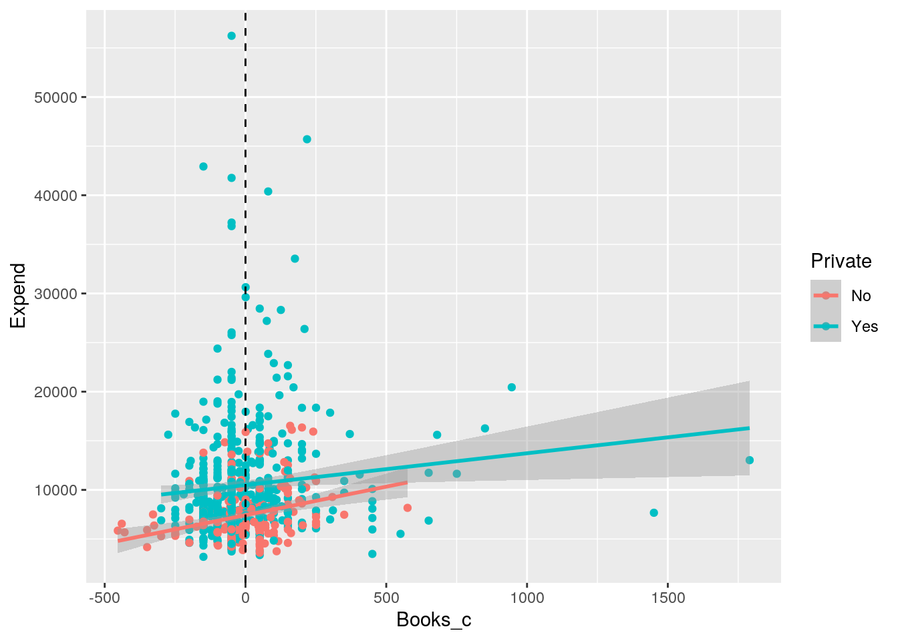
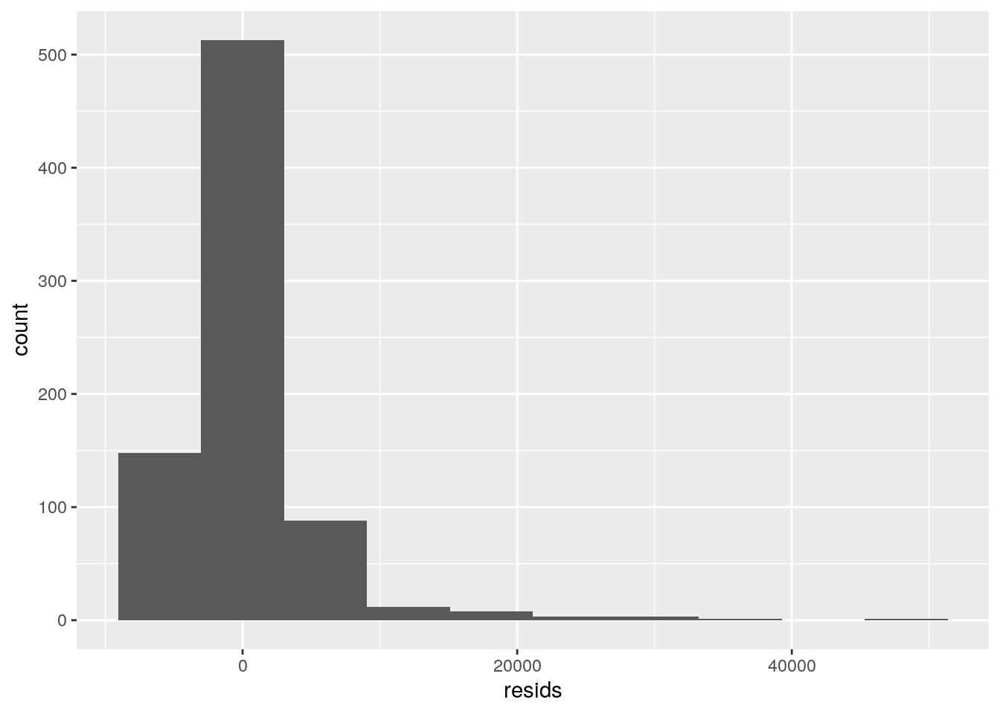

January 1, 0001
Caitlyn Wilson cbw2228
This Project is due on May 7, 2021 at 11:59pm. Please submit as an HTML file on Canvas.
For all questions, include the R commands/functions that you used to find your answer. Answers without supporting code will not receive credit.
Review of how to submit this assignment
All homework assignments will be completed using R Markdown. These
.Rmdfiles consist of >text/syntax (formatted using Markdown) alongside embedded R code. When you have completed the assignment (by adding R code inside codeblocks and supporting text outside of the codeblocks), create your document as follows:
- Click the arrow next to the “Knit” button (above)
- Choose “Knit to HTML”
- Go to Files pane and put checkmark next to the correct HTML file
- Click on the blue gear icon (“More”) and click Export
- Download the file and then upload to Canvas
Question 0: (5 pts)
Introduce your dataset and each of your variables (or just your main variables if you have lots) in a paragraph. What are they measuring? How many observations?
# Paragraph BelowThe College dataset is recorded statistics for various colleges within the United States in 1995. The information was taken from the US News and World Report. This dataframe has 777 observations on the following 18 variables (the row names are the colleges). The variable Private is a “No” or “Yes” level describing whether or not the college is a private or a public university. Apps is the recorded number of applications that were received by the college. Accept is the recorded number of applications that were accepted for each college. Enroll is the recorded number of accepted students that were enrolled. Top10perc is the percent of newly enrolled students that came from the top 10% of their high school class. Top25perc is the percent of newly enrolled students that came from the top 25% of their high school class. F.Undergard is the recorded number of undergraduates that are fulltime (enrolled in 12+ hours). P.Undergrad is the recorded number of undergraduates that are part-time (enrolled in fewer than 12 hours). Outstate refers to the recorded number of out-of-state tuition for each college. Room.Board is the average room and board costs for each college. Books is the estimated cost for books for each college. Personal is the estimation of personal spending per student at every college. PhD is the percent of faculty with Ph.D.’s. Terminal is the percent of faculty that have a terminal degree. S.F.Ratio is the student to faculty ratio for each college. Perc.alumni is the percent of alumni who donate to their colleges. Expend is the average instructional expenditure per student for each college. Grade.Rate is the graduation rate for each college.
Question 1: (15 pts)
Perform a MANOVA testing whether any of your numeric variables (or a subset of them, if including them all is unreasonable or doesn’t make sense) show a mean difference across levels of one of your categorical variables (3). If they do, perform univariate ANOVAs to find response(s) showing a mean difference across groups (3), and perform post-hoc t tests to find which groups differ (3). Discuss the number of tests you have performed, calculate the probability of at least one type I error (if unadjusted), and adjust the significance level accordingly (bonferroni correction) before discussing significant differences (3). Briefly discuss some of the MANOVA assumptions and whether or not they are likely to have been met here (no need for anything too in-depth) (2).
library(dplyr)
library(tidyverse)
library(ggplot2)
library(ISLR)
library(lmtest)
library(plotROC)
college <- tibble::rownames_to_column(College, "College")
data("College")
# H0: For each response variable, the means of all
# groups are equal HA: For at least 1 response
# variable, at least 1 group mean differs
library(rstatix)
group <- college$Private
DVs <- college %>% select(Apps, Accept, Enroll, F.Undergrad,
P.Undergrad, Room.Board, Books, Grad.Rate)
sapply(split(DVs, group), mshapiro_test)## No Yes
## statistic 0.5657134 0.4215451
## p.value 9.917965e-23 5.640583e-39man1 <- manova(cbind(Apps, Accept, Enroll, F.Undergrad,
P.Undergrad, Room.Board, Books, Grad.Rate) ~ Private,
data = college)
summary(man1)## Df Pillai approx F num Df den Df Pr(>F)
## Private 1 0.51182 100.65 8 768 < 2.2e-16 ***
## Residuals 775
## ---
## Signif. codes: 0 '***' 0.001 '**' 0.01 '*' 0.05 '.' 0.1 ' ' 1# Findings: For at least one of the variables
# listed, private vs. public is different from the
# other.
summary.aov(man1)## Response Apps :
## Df Sum Sq Mean Sq F value Pr(>F)
## Private 1 2170135119 2170135119 177.91 < 2.2e-16 ***
## Residuals 775 9453149477 12197612
## ---
## Signif. codes: 0 '***' 0.001 '**' 0.01 '*' 0.05 '.' 0.1 ' ' 1
##
## Response Accept :
## Df Sum Sq Mean Sq F value Pr(>F)
## Private 1 1053019891 1.053e+09 226.12 < 2.2e-16 ***
## Residuals 775 3609156835 4.657e+06
## ---
## Signif. codes: 0 '***' 0.001 '**' 0.01 '*' 0.05 '.' 0.1 ' ' 1
##
## Response Enroll :
## Df Sum Sq Mean Sq F value Pr(>F)
## Private 1 216079474 216079474 368.94 < 2.2e-16 ***
## Residuals 775 453894399 585670
## ---
## Signif. codes: 0 '***' 0.001 '**' 0.01 '*' 0.05 '.' 0.1 ' ' 1
##
## Response F.Undergrad :
## Df Sum Sq Mean Sq F value Pr(>F)
## Private 1 6.9177e+09 6917705283 472.82 < 2.2e-16 ***
## Residuals 775 1.1339e+10 14630865
## ---
## Signif. codes: 0 '***' 0.001 '**' 0.01 '*' 0.05 '.' 0.1 ' ' 1
##
## Response P.Undergrad :
## Df Sum Sq Mean Sq F value Pr(>F)
## Private 1 367606290 367606290 199.09 < 2.2e-16 ***
## Residuals 775 1431005619 1846459
## ---
## Signif. codes: 0 '***' 0.001 '**' 0.01 '*' 0.05 '.' 0.1 ' ' 1
##
## Response Room.Board :
## Df Sum Sq Mean Sq F value Pr(>F)
## Private 1 108230726 108230726 101.66 < 2.2e-16 ***
## Residuals 775 825097864 1064642
## ---
## Signif. codes: 0 '***' 0.001 '**' 0.01 '*' 0.05 '.' 0.1 ' ' 1
##
## Response Books :
## Df Sum Sq Mean Sq F value Pr(>F)
## Private 1 7278 7278.2 0.2667 0.6057
## Residuals 775 21146311 27285.6
##
## Response Grad.Rate :
## Df Sum Sq Mean Sq F value Pr(>F)
## Private 1 25876 25875.6 98.737 < 2.2e-16 ***
## Residuals 775 203102 262.1
## ---
## Signif. codes: 0 '***' 0.001 '**' 0.01 '*' 0.05 '.' 0.1 ' ' 1# For `Apps`, `Accept`, `Enroll`, `F.Undergrad`,
# `P.Undergrad`, `Room.Board`, and `Grad.Rate`
# (everything listed except for `Books`) there are
# differences between whether or not the college is
# `Private`.
college %>% group_by(Private) %>% summarize(mean(Accept),
mean(Enroll), mean(F.Undergrad), mean(P.Undergrad),
mean(Room.Board), mean(Grad.Rate))## # A tibble: 2 x 7
## Private `mean(Accept)` `mean(Enroll)` `mean(F.Undergrad)` `mean(P.Undergrad)`
## <fct> <dbl> <dbl> <dbl> <dbl>
## 1 No 3919. 1641. 8571. 1978.
## 2 Yes 1306. 457. 1872. 434.
## # … with 2 more variables: mean(Room.Board) <dbl>, mean(Grad.Rate) <dbl>1 + 8## [1] 9# A total of 9 tests were done. Probability of at
# least one Type 1 error is 0.3697506. (36.98%
# chance of making at least one Type 1 error)
1 - (0.95)^9## [1] 0.3697506# The Bonferroni correction is 0.005555556.
# Rejecting at that are less than this value will
# keep the overall Type 1 error rate at 5% rather
# than 36.98%.
0.05/9## [1] 0.005555556# Even after adjusting the significance level
# accordingly, everything still remains as
# discussed in terms of significance (everything is
# significant except for `Books`), but violations
# were made to the assumptions.Significant differences were found among whether or not the school is Private for at least one of the dependent variables, Pillai trace = 0.51, F(8,768) = 100.65, p < 0.001. Univariate ANOVAs for each dependent variable were conducted as follow-up tests to the MANOVA, using the Bonferroni method for controlling Type 1 error rates for multiple comparisons. The univariate ANOVAs for Apps (F(1,775)=177.91,p<0.0001), Accept (F(1,775)=226.12, p<0.0001), Enroll (F(1,775)=368.94,p<0.0001), F.Undergrad (F(1,775)=472.82,p<0.0001), P.Undergrad (F(1,775)=199.09,p<0.0001), Room.Board (F(1,775)=101.66, p<0.0001), and Grad.Rate(F(1,775)=98.737,p<0.0001) were significant. Post hoc analysis was performed conducting pairwise comparisons between which category (Private or Public) differed in the dependent variables (Apps, Accept, Enroll, F.Undergrad, P.Undergrad, Room.Board,Grad.Rate and Books). The two groups (Private or Public) were found to differ significantly from each other in terms of all of the dependent variables (Apps, Accept, Enroll, F.Undergrad, P.Undergrad, Room.Board,Grad.Rate) except for Books after adjusting for multiple comparisons (bonferroni α = 0.5/9 = 0.005555556). The following MANOVA assumptions were not met, which include 1) random samples, with independent observations, 2) multivariate normality of DVs, 3) homogeneity of within-group covariance matrices, 4) linear relationships among DVs, 5) no extreme univaraite or multivariate outliers, and 6) no multicollinearity.
Question 2: (10 pts)
Perform some kind of randomization test on your data (that makes sense). The statistic can be anything you want (mean difference, correlation, F-statistic/ANOVA, chi-squared), etc. State null and alternative hypotheses, perform the test, and interpret the results (7). Create a plot visualizing the null distribution and the test statistic (3).
library(dplyr)
obs_F <- 55.48
summary(aov(Expend ~ Private, data = college))## Df Sum Sq Mean Sq F value Pr(>F)
## Private 1 1.413e+09 1.413e+09 55.48 2.52e-13 ***
## Residuals 775 1.975e+10 2.548e+07
## ---
## Signif. codes: 0 '***' 0.001 '**' 0.01 '*' 0.05 '.' 0.1 ' ' 1new <- college
Fs <- replicate(5000, {
# do everything in curly braces 5000 times and save
# the output
new <- college %>% mutate(Expend = sample(Expend)) #randomly permute response variable (y)
# compute the SSW and SSB by hand
SSW <- new %>% group_by(Private) %>% summarize(SSW = sum((Expend -
mean(Expend))^2)) %>% summarize(sum(SSW)) %>%
pull
SSB <- new %>% mutate(mean = mean(Expend)) %>%
group_by(Private) %>% mutate(groupmean = mean(Expend)) %>%
summarize(SSB = sum((mean - groupmean)^2)) %>%
summarize(sum(SSB)) %>% pull
(SSB/1)/(SSW/775)
})
hist(Fs, prob = T)
abline(v = obs_F, col = "red", add = T)mean(Fs > obs_F)## [1] 0#The null hypothesis is the population mean of out of state tuition for Private colleges is equal to the mean population of of out of state tuition for colleges that are NOT private. The alternative hypothesis is that at least one of the means is different from each other. The p-value is effectively 0. All of our 5000 F statistics generated under the null hypothesis were smaller than our actual F statistic (55.48). Definitely reject the null hypothesis and conclude that the groups differ significantly!
Question 3: (40 pts)
Build a linear regression model predicting one of your response variables from at least 2 other variables, including their interaction. Mean-center any numeric variables involved in the interaction.
bc <- data.frame(Books_c = college$Books - mean(college$Books,
na.rm = T))
college <- data.frame(college, bc)
rbc <- data.frame(Room.Board_c = college$Room.Board -
mean(college$Room.Board, na.rm = T))
college <- data.frame(college, rbc)
fit3 <- lm(Expend ~ Books_c * Private, data = college)
summary(fit3)##
## Call:
## lm(formula = Expend ~ Books_c * Private, data = college)
##
## Residuals:
## Min 1Q Median 3Q Max
## -8471 -2658 -1138 1071 45900
##
## Coefficients:
## Estimate Std. Error t value Pr(>|t|)
## (Intercept) 7429.349 344.603 21.559 < 2e-16 ***
## Books_c 5.798 2.543 2.280 0.0229 *
## PrivateYes 3063.075 404.047 7.581 9.84e-14 ***
## Books_c:PrivateYes -2.560 2.815 -0.909 0.3634
## ---
## Signif. codes: 0 '***' 0.001 '**' 0.01 '*' 0.05 '.' 0.1 ' ' 1
##
## Residual standard error: 5014 on 773 degrees of freedom
## Multiple R-squared: 0.08153, Adjusted R-squared: 0.07796
## F-statistic: 22.87 on 3 and 773 DF, p-value: 3.417e-14college %>% select(Expend, Books_c, Private) %>% na.omit %>%
ggplot(aes(Books_c, Expend, color = Private)) +
geom_point() + geom_smooth(method = "lm") + geom_vline(xintercept = mean(college$Books_c,
na.rm = T), lty = 2)
# Linearity looking at the mean difference in terms
# of the two groups (private vs. public)
resids <- lm(Expend ~ Books * Private, data = college)$residuals
library(tidyverse)
library(ggplot2)
fit3residuals <- fit3$residuals
fit3fit <- fit3$fitted.values
ggplot() + geom_point(aes(fit3fit, fit3residuals)) +
geom_hline(yintercept = 0, color = "red")ggplot() + geom_histogram(aes(fit3residuals), bins = 20)ggplot() + geom_qq(aes(sample = fit3residuals)) + geom_qq_line(aes(sample = fit3residuals))
# looking at the residuals, there is a slight
# fanning out pattern that makes it less likely to
# determine the dataset to be completely linear and
# normal.
ggplot() + geom_histogram(aes(resids), bins = 10)
# Homoskedasticity
ggplot(college, aes(Books, Expend, color = Private)) +
geom_point()# There is a slight fanning out pattern, so it is
# difficult to tell whether or not it violates the
# assumption of equal variance.
library(sandwich)
bptest(fit3)##
## studentized Breusch-Pagan test
##
## data: fit3
## BP = 7.7915, df = 3, p-value = 0.05052# H0: homoskedastic assumption is met HA:
# homoskedastic assumption is not met Findings:
# because the p-value is greater than 0.0t, the H0
# was failed to be rejected.
coeftest(fit3, vcov = vcovHC(fit3))##
## t test of coefficients:
##
## Estimate Std. Error t value Pr(>|t|)
## (Intercept) 7429.3486 176.4264 42.1102 < 2.2e-16 ***
## Books_c 5.7977 1.2447 4.6577 3.764e-06 ***
## PrivateYes 3063.0748 296.9457 10.3153 < 2.2e-16 ***
## Books_c:PrivateYes -2.5602 1.8462 -1.3868 0.1659
## ---
## Signif. codes: 0 '***' 0.001 '**' 0.01 '*' 0.05 '.' 0.1 ' ' 1The intercept is simply the mean of the value that was centered on. With Books centered at the mean, this means that Books is centered in the range of the rest of the data and that context influenced all of the variables. The mean/predicted amount for average instructional expenditure per students at colleges that are NOT private with spend average amount for the costs of books is 7429.349 units of expenditure. Private colleges with an average amount of book costs have predicted amount of units of intstructional expenditure 3063.075 higher than colleges that are NOT private with an average amount of Book costs. Colleges that are not private have 5.798 more units of instructional expenditure than private colleges. The proportion of the variation in the outcome explained by the model is 0.07796. After redoing the regression using heteroskadsticity robust standard errors, the t-value for Books_c increased from 2.280 to 4.6577, making the standard error decrease. The t-value for Private colleges increased from 7.581 to 10.3153, making the standard error decrease. The t-value for the interaction between Books_c and Private colleges decreased from -0.909 to -1.3868. The p-value significance for all of the variables remained the same (Book_c and Private colleges were significant, while the interactio between Books_c and Private colleges was not). This shows that Books_c and Private colleges does explain some of the variation in the amount of instructional expenditure.
Question 4: (5 pts)
Rerun same regression model (with the interaction), but this time compute bootstrapped standard errors (either by resampling observations or residuals). Discuss any changes you observe in SEs and p-values using these SEs compared to the original SEs and the robust SEs).
set.seed(348)
boot_dat <- sample_frac(college, replace = T)
samp_distn <- replicate(5000, {
boot_dat <- sample_frac(college, replace = T) #take bootstrap sample of rows
fit <- lm(Expend ~ Books_c * Private, data = boot_dat) #fit model on bootstrap sample
coef(fit) #save coefs
})
## Estimated SEs
samp_distn %>% t %>% as.data.frame %>% summarize_all(sd)## (Intercept) Books_c PrivateYes Books_c:PrivateYes
## 1 176.4348 1.250056 298.9327 1.833851The estimated standard error in #3 is slightly smaller (relatively the same) for the intercept, which is 176.4264 to 176.4348 respectively. The estimated standard error in #3 for Book_c (1.2447 to 1.250056) and Private colleges (296.9457 to 298.9327), is slightly smaller, but relatively the same. For the interaction between Book_c and Private colleges, the estimated standard error in #3 is slightly larger (relatively the same) from 1.8462 to 1.833851.
Question 5: (30 pts)
Fit a logistic regression model predicting a binary variable (if you don’t have one, make/get one) from at least two explanatory variables (interaction not necessary).
college <- college %>% mutate(y = ifelse(Private ==
"Yes", 1, 0))
fit5 <- glm(y ~ Personal + S.F.Ratio, data = college,
family = binomial(link = "logit"))
summary(fit5)##
## Call:
## glm(formula = y ~ Personal + S.F.Ratio, family = binomial(link = "logit"),
## data = college)
##
## Deviance Residuals:
## Min 1Q Median 3Q Max
## -2.8134 -0.5647 0.4036 0.6355 3.7588
##
## Coefficients:
## Estimate Std. Error z value Pr(>|z|)
## (Intercept) 7.4961246 0.5518734 13.583 < 2e-16 ***
## Personal -0.0010007 0.0001419 -7.052 1.77e-12 ***
## S.F.Ratio -0.3406742 0.0307270 -11.087 < 2e-16 ***
## ---
## Signif. codes: 0 '***' 0.001 '**' 0.01 '*' 0.05 '.' 0.1 ' ' 1
##
## (Dispersion parameter for binomial family taken to be 1)
##
## Null deviance: 910.75 on 776 degrees of freedom
## Residual deviance: 665.69 on 774 degrees of freedom
## AIC: 671.69
##
## Number of Fisher Scoring iterations: 5exp(coef(fit5))## (Intercept) Personal S.F.Ratio
## 1801.0491225 0.9989998 0.7112906fit5_1 <- glm(y ~ Personal + S.F.Ratio, data = college,
family = "binomial")
probs5 <- predict(fit5_1, type = "response") #get predicted probs from model
## Confusion matrix
table(truth = college$y, predict = as.numeric(probs5 >
0.5)) %>% addmargins## predict
## truth 0 1 Sum
## 0 106 106 212
## 1 38 527 565
## Sum 144 633 777# Accuracy = 0.8146718
(106 + 527)/777## [1] 0.8146718# TNR (specificity) = 0.5
(106/212)## [1] 0.5# TPR (sensitivity) = 0.9327434
(527/565)## [1] 0.9327434# Precision = 0.8325434
(527/633)## [1] 0.8325434############################################
class_diag <- function(probs, truth) {
tab <- table(factor(probs > 0.5, levels = c("FALSE",
"TRUE")), truth)
acc = sum(diag(tab))/sum(tab)
sens = tab[2, 2]/colSums(tab)[2]
spec = tab[1, 1]/colSums(tab)[1]
ppv = tab[2, 2]/rowSums(tab)[2]
if (is.numeric(truth) == FALSE & is.logical(truth) ==
FALSE)
truth <- as.numeric(truth) - 1
# CALCULATE EXACT AUC
ord <- order(probs, decreasing = TRUE)
probs <- probs[ord]
truth <- truth[ord]
TPR = cumsum(truth)/max(1, sum(truth))
FPR = cumsum(!truth)/max(1, sum(!truth))
dup <- c(probs[-1] >= probs[-length(probs)], FALSE)
TPR <- c(0, TPR[!dup], 1)
FPR <- c(0, FPR[!dup], 1)
n <- length(TPR)
auc <- sum(((TPR[-1] + TPR[-n])/2) * (FPR[-1] -
FPR[-n]))
data.frame(acc, sens, spec, ppv, auc)
}
############################################
class_diag(probs5, college$Private)## acc sens spec ppv auc
## Yes 0.8146718 0.9327434 0.5 0.8325434 0.8545667# The AUC value is 0.8545667.
college$logit <- predict(fit5_1, type = "link")
college %>% ggplot() + geom_density(aes(logit, color = Private,
fill = Private), alpha = 0.4) + theme(legend.position = c(0.85,
0.85)) + geom_vline(xintercept = 0) + xlab("logit (log-odds)") +
geom_rug(aes(logit, color = Private)) + geom_text(x = -5,
y = 0.07, label = "TN = 431") + geom_text(x = -1.75,
y = 0.008, label = "FN = 19") + geom_text(x = 1,
y = 0.006, label = "FP = 13") + geom_text(x = 5,
y = 0.04, label = "TP = 220")ROCplot1 <- ggplot(college) + geom_roc(aes(d = y, m = probs5),
n.cuts = 0)
ROCplot1calc_auc(ROCplot1)## PANEL group AUC
## 1 1 -1 0.8545667# AUC is 0.8545667Every one-unit decrease in average personal spending multiplies the odds of the college being a private college by 0.9989998. Every one-unit decrease in average student to faculty ratio multiplies the odds of the college being a private college by 0.7112906. Based on the confusion matrix, the accuracy is 0.81, the speicificity is 0.5, the sensitivity is 0.9327434, the precision is 0.8325434 and the AUC is 0.8545667. The accuracy and the sensitivity is fairly good, along with the precision. The AUC is considered to be “good”.
Question 6: (25 pts)
Perform a logistic regression predicting the same binary response variable from ALL of the rest of your variables (the more, the better!)
fit6 <- glm(y ~ Apps + Accept + Enroll + Personal +
S.F.Ratio, data = college, family = "binomial")
library(ISLR)
data("College")
college <- tibble::rownames_to_column(College, "College")
college <- college %>% mutate(y = ifelse(Private ==
"Yes", 1, 0))
college <- college %>% dplyr::select(-College, -Private)
#############################################################
class_diag <- function(probs, truth) {
tab <- table(factor(probs > 0.5, levels = c("FALSE",
"TRUE")), truth)
acc = sum(diag(tab))/sum(tab)
sens = tab[2, 2]/colSums(tab)[2]
spec = tab[1, 1]/colSums(tab)[1]
ppv = tab[2, 2]/rowSums(tab)[2]
if (is.numeric(truth) == FALSE & is.logical(truth) ==
FALSE)
truth <- as.numeric(truth) - 1
# CALCULATE EXACT AUC
ord <- order(probs, decreasing = TRUE)
probs <- probs[ord]
truth <- truth[ord]
TPR = cumsum(truth)/max(1, sum(truth))
FPR = cumsum(!truth)/max(1, sum(!truth))
dup <- c(probs[-1] >= probs[-length(probs)], FALSE)
TPR <- c(0, TPR[!dup], 1)
FPR <- c(0, FPR[!dup], 1)
n <- length(TPR)
auc <- sum(((TPR[-1] + TPR[-n])/2) * (FPR[-1] -
FPR[-n]))
data.frame(acc, sens, spec, ppv, auc)
}
#############################################################
fit <- glm(y ~ ., data = college, family = "binomial")
probs <- predict(fit, type = "response")
class_diag(probs, college$y)## acc sens spec ppv auc
## 1 0.9446589 0.9610619 0.9009434 0.962766 0.980915set.seed(1234)
k = 10
data <- college[sample(nrow(college)), ]
folds <- cut(seq(1:nrow(college)), breaks = k, labels = F) #create folds
diags <- NULL
for (i in 1:k) {
train <- data[folds != i, ]
test <- data[folds == i, ]
truth <- test$y
fit <- glm(y ~ ., data = train, family = "binomial")
probs <- predict(fit, newdata = test, type = "response")
diags <- rbind(diags, class_diag(probs, truth))
}
summarize_all(diags, mean)## acc sens spec ppv auc
## 1 0.9369297 0.9580966 0.8823868 0.9563208 0.971949library(glmnet)
y <- as.matrix(college$y)
x <- model.matrix(y ~ ., data = college)
cv <- cv.glmnet(x, y, family = "binomial")
lasso <- glmnet(x, y, family = "binomial", lambda = cv$lambda.1se)
coef(lasso)## 19 x 1 sparse Matrix of class "dgCMatrix"
## s0
## (Intercept) 1.098291e+00
## (Intercept) .
## Apps -7.096984e-05
## Accept .
## Enroll .
## Top10perc .
## Top25perc .
## F.Undergrad -2.883099e-04
## P.Undergrad -9.735892e-06
## Outstate 5.346715e-04
## Room.Board .
## Books .
## Personal .
## PhD -3.050240e-02
## Terminal -1.332212e-02
## S.F.Ratio -7.881664e-02
## perc.alumni 3.132823e-02
## Expend .
## Grad.Rate 5.426951e-03lassop <- college %>% select(Apps, F.Undergrad, P.Undergrad,
Outstate, PhD, Terminal, S.F.Ratio, perc.alumni,
Grad.Rate, y)
set.seed(1234)
k = 10
data <- lassop[sample(nrow(lassop)), ]
folds <- cut(seq(1:nrow(lassop)), breaks = k, labels = F) #create folds
diags <- NULL
for (i in 1:k) {
train <- data[folds != i, ]
test <- data[folds == i, ]
truth <- test$y
fit <- glm(y ~ ., data = train, family = "binomial")
probs <- predict(fit, newdata = test, type = "response")
diags <- rbind(diags, class_diag(probs, truth))
}
summarize_all(diags, mean)## acc sens spec ppv auc
## 1 0.9305361 0.9526934 0.8733687 0.9524904 0.9758557The performance of the in-sample is excellent, wieth all of the classification diagnostics being greater than 0.90. There was substantial decrease in the average out-of-sample classification diagnostics compared to the in-sample classification diagnostics. Although the values still remain fairly good, the specificity was the most that was impacted - dropping from 0.9009434 to 0.8823868. The AUC remains to be categorized as “great”. The variables that were retained after choosing lambda that gave the simplet model who accuracy was near that of the best included Apps, F.Undergrad, P.Undergrad, Outstate, PhD, Terminal, S.F.Ratio, perc.alumni, and Grad.Rate. Comparing the previous out of sample classification diagnostics to the lasso-selected variables, overall, there was a noticeable increase in the improvement in the classifications.
## R version 3.6.1 (2019-07-05)
## Platform: x86_64-pc-linux-gnu (64-bit)
## Running under: Ubuntu 18.04.5 LTS
##
## Matrix products: default
## BLAS: /stor/system/opt/R/R-3.6.1/lib/R/lib/libRblas.so
## LAPACK: /stor/system/opt/R/R-3.6.1/lib/R/lib/libRlapack.so
##
## locale:
## [1] LC_CTYPE=en_US.UTF-8 LC_NUMERIC=C
## [3] LC_TIME=en_US.UTF-8 LC_COLLATE=en_US.UTF-8
## [5] LC_MONETARY=en_US.UTF-8 LC_MESSAGES=en_US.UTF-8
## [7] LC_PAPER=en_US.UTF-8 LC_NAME=C
## [9] LC_ADDRESS=C LC_TELEPHONE=C
## [11] LC_MEASUREMENT=en_US.UTF-8 LC_IDENTIFICATION=C
##
## attached base packages:
## [1] stats graphics grDevices utils datasets methods base
##
## other attached packages:
## [1] glmnet_4.1-1 Matrix_1.3-2 sandwich_3.0-0 rstatix_0.6.0
## [5] plotROC_2.2.1 lmtest_0.9-38 zoo_1.8-8 ISLR_1.2
## [9] forcats_0.5.0 stringr_1.4.0 purrr_0.3.4 readr_1.4.0
## [13] tidyr_1.1.2 tibble_3.1.0 ggplot2_3.3.3 tidyverse_1.3.0
## [17] dplyr_1.0.2
##
## loaded via a namespace (and not attached):
## [1] nlme_3.1-151 fs_1.5.0 lubridate_1.7.9.2 httr_1.4.2
## [5] tools_3.6.1 backports_1.2.1 utf8_1.2.1 R6_2.5.0
## [9] DBI_1.1.0 mgcv_1.8-33 colorspace_2.0-0 withr_2.3.0
## [13] tidyselect_1.1.0 curl_4.3 compiler_3.6.1 cli_2.3.1
## [17] rvest_0.3.6 formatR_1.7 xml2_1.3.2 labeling_0.4.2
## [21] bookdown_0.21 scales_1.1.1 digest_0.6.27 foreign_0.8-71
## [25] rmarkdown_2.6 rio_0.5.16 pkgconfig_2.0.3 htmltools_0.5.0
## [29] dbplyr_2.0.0 rlang_0.4.10 readxl_1.3.1 rstudioapi_0.13
## [33] shape_1.4.5 farver_2.0.3 generics_0.1.0 jsonlite_1.7.2
## [37] zip_2.1.1 car_3.0-10 magrittr_2.0.1 Rcpp_1.0.5
## [41] munsell_0.5.0 fansi_0.4.2 abind_1.4-5 lifecycle_1.0.0
## [45] stringi_1.5.3 yaml_2.2.1 carData_3.0-4 debugme_1.1.0
## [49] plyr_1.8.6 grid_3.6.1 crayon_1.4.1 lattice_0.20-41
## [53] haven_2.3.1 splines_3.6.1 hms_0.5.3 knitr_1.30
## [57] pillar_1.5.1 codetools_0.2-18 reprex_0.3.0 glue_1.4.2
## [61] evaluate_0.14 blogdown_0.20 data.table_1.13.6 modelr_0.1.8
## [65] vctrs_0.3.7 foreach_1.5.1 cellranger_1.1.0 gtable_0.3.0
## [69] assertthat_0.2.1 xfun_0.20 openxlsx_4.2.3 broom_0.7.3
## [73] survival_3.2-7 iterators_1.0.13 ellipsis_0.3.1## [1] "2021-05-07 14:47:02 CDT"## sysname
## "Linux"
## release
## "4.15.0-142-generic"
## version
## "#146-Ubuntu SMP Tue Apr 13 01:11:19 UTC 2021"
## nodename
## "educcomp04.ccbb.utexas.edu"
## machine
## "x86_64"
## login
## "unknown"
## user
## "cbw2228"
## effective_user
## "cbw2228"